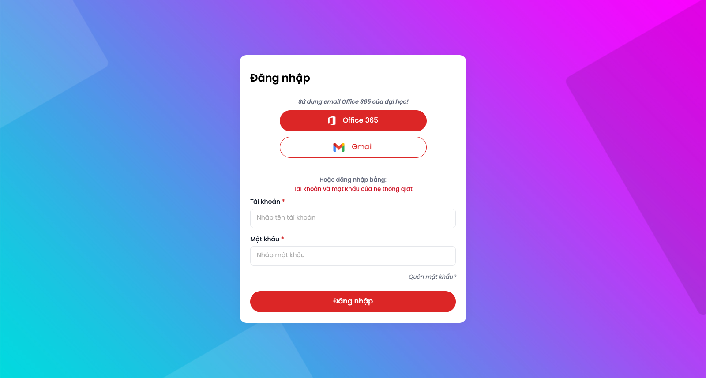
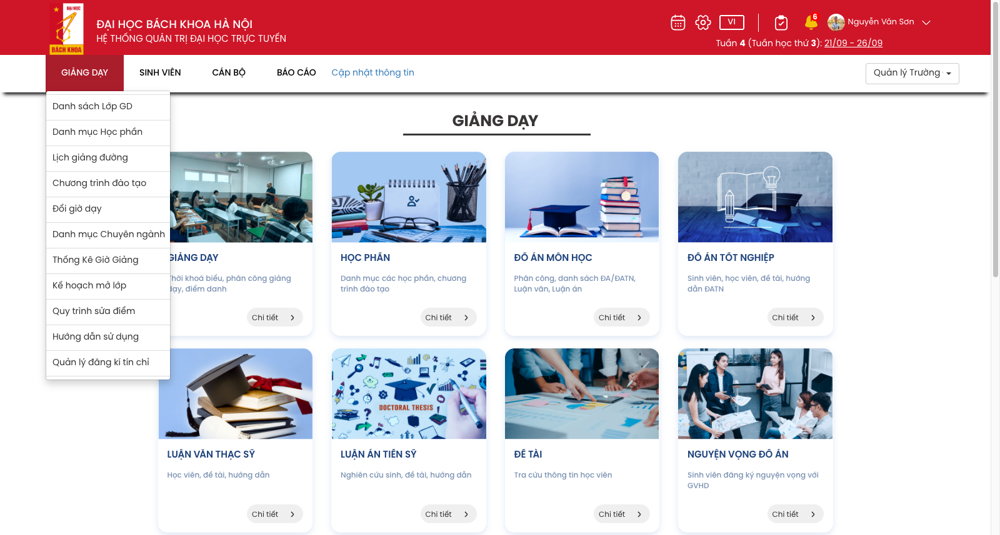
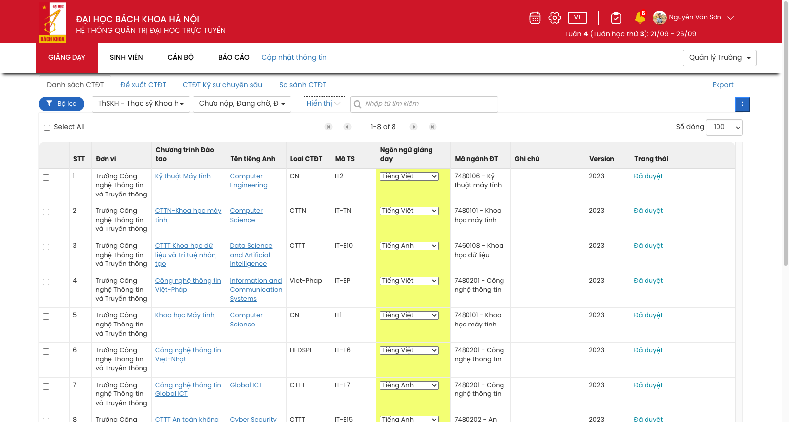
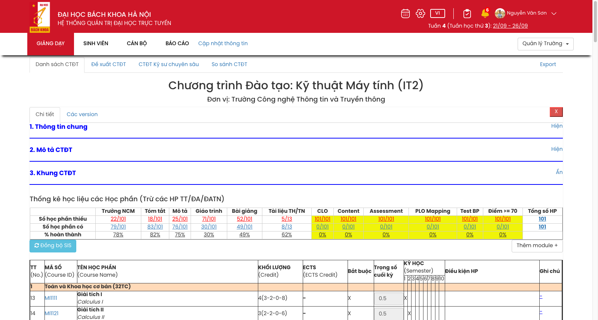
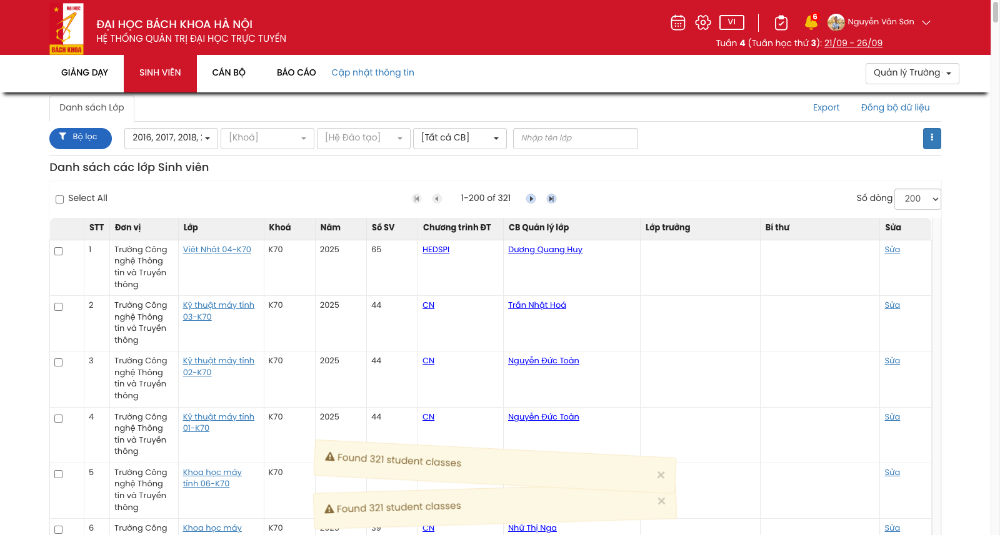
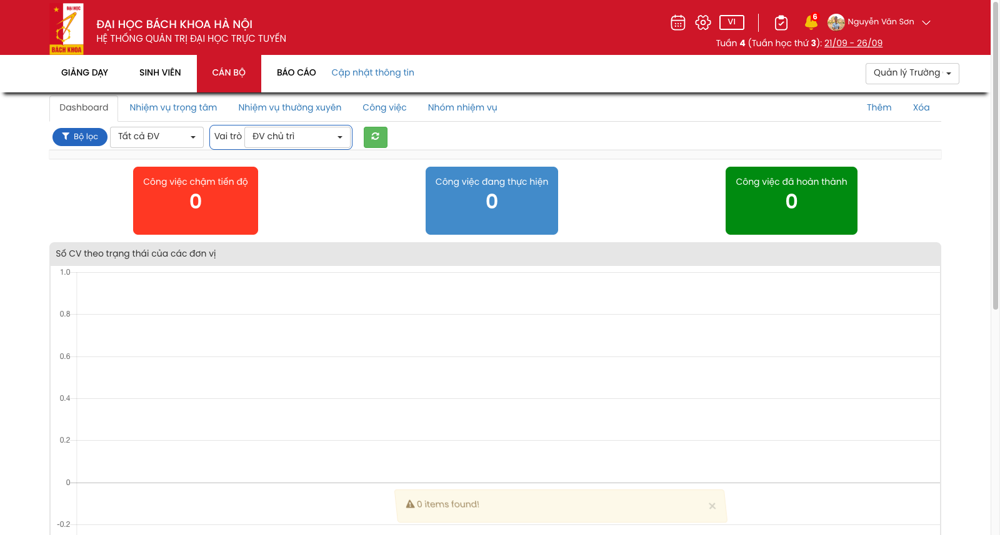
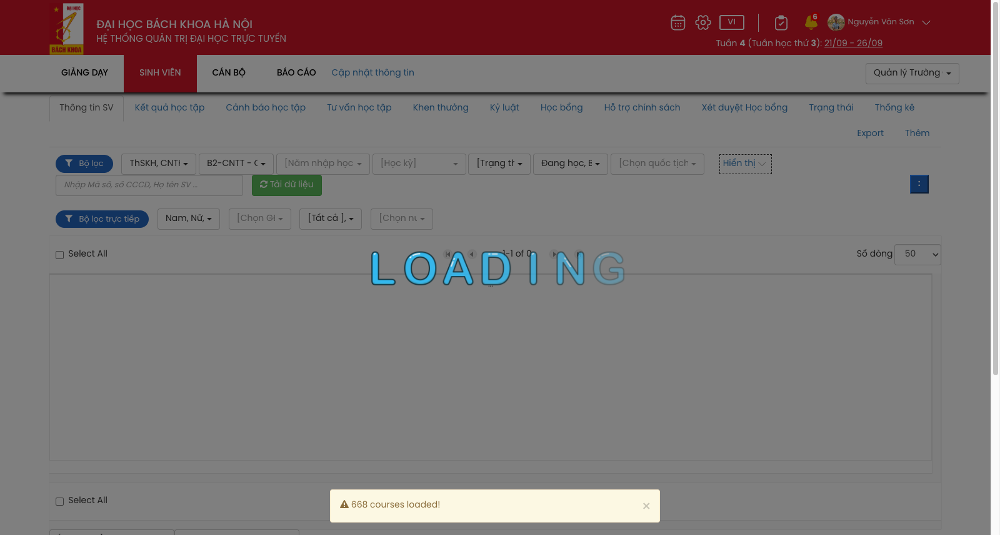
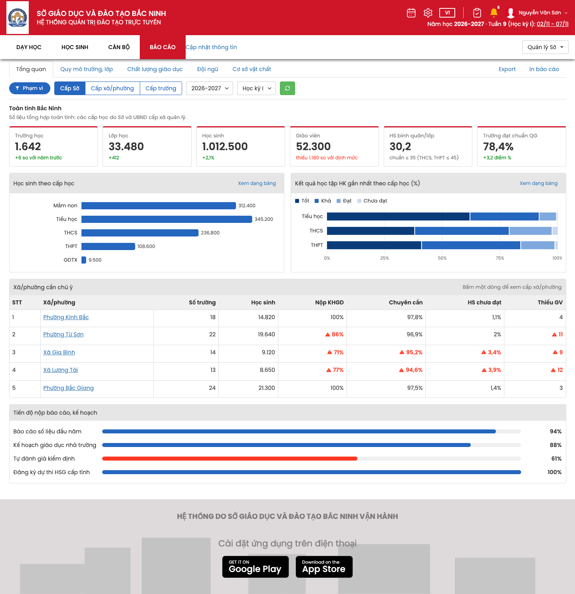
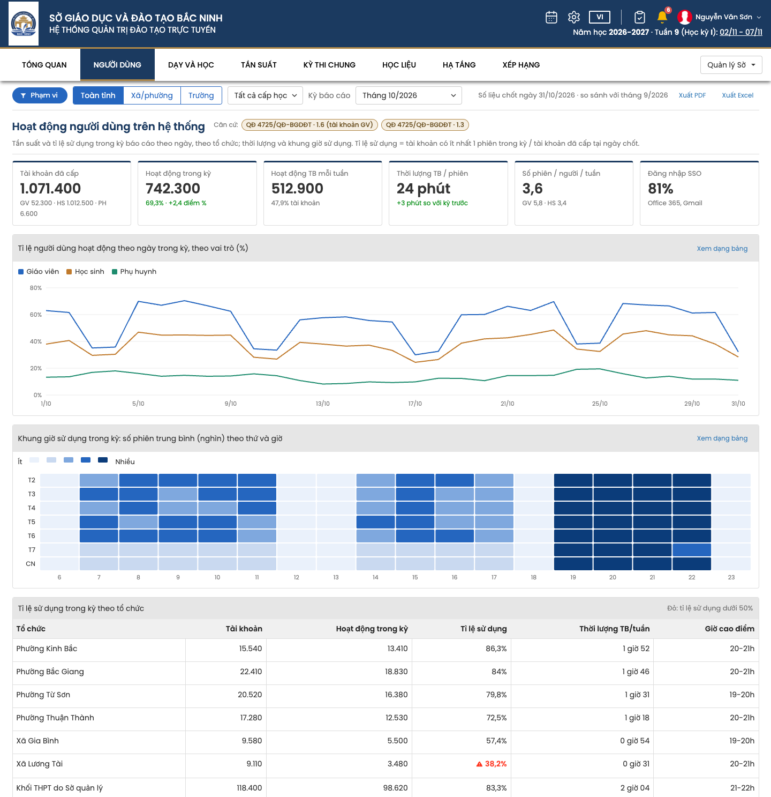

QLĐT Design System
Trang quản trị giáo dục cấp K12 cho Sở GD&ĐT, xã/phường và nhà trường: header đỏ, menu ngang 4 mục có menu con, màn danh sách dày đặc bộ lọc và bảng dữ liệu. Giao diện dựng lại từ 15 ảnh chụp màn hình qldt.bkademy.vn (màu lấy từ pixel), dữ liệu mẫu đã chuyển sang cấp K12. Dùng qldt.css + qldt.js, tiền tố qd-, tách riêng với TVET (tv-) và LCMS (lc-).
Nguyên tắc
Màn danh sách dành gần hết chiều cao cho bảng. Bộ lọc gói thành 1–2 hàng, chữ trong select được cắt bớt thay vì xuống dòng.
Navy #1B3A60 và vàng đồng #B08848 lấy từ logo Sở, chỉ xuất hiện ở header, mục menu đang chọn và màn đăng nhập (site gốc dùng đỏ #CE1628). Mọi hành động trong trang dùng xanh Bootstrap: #2566BF, #337AB7, #5CB85C.
Tab, Export, Thêm, Sửa, tên bản ghi đều là chữ xanh. Nút có nền chỉ dùng cho thao tác nặng: Tải dữ liệu, Đồng bộ, Gửi email.
Màu sắc
Lấy mẫu pixel từ ảnh chụp 1600px. Phần lớn là bảng màu Bootstrap 3 mặc định. Nhóm "Nhấn mạnh dữ liệu" là màu thuần (#FF0000, #0000FF…) mà site gốc dùng để đánh dấu, giữ nguyên để màn mới quen mắt người dùng.
Brand & hành động
Brand--qd-brand · #1B3A60
Brand hovermenu mở · #284888
Accent--qd-accent · #B08848
PrimaryBộ lọc, ⋮ · #2566BF
Linktab, link bảng · #337AB7
Focusmục đang chọn · #005FCC
Successlàm mới, tải · #5CB85C
InfoĐồng bộ CSDL · #5BC0DE
Dangernút X · #D9534F
Teal"Đã duyệt" · #00879E
Thẻ chức năng · KPI
Card title#20447D
Card desc#7990B1
Card buttonChi tiết · #EFEFEF
KPI đỏchậm tiến độ · #FF3823
KPI xanhđang thực hiện · #428BCA
KPI lụchoàn thành · #008B10
Nhấn mạnh dữ liệu
Cột tôsửa trực tiếp · #F3FF73
Ô thiếu dữ liệu#F0F409
Số thiếu22/101 · #FF0000
Section1. 2. 3. · #0000FF
Dòng nhómkhối kiến thức · #FFDAB9
Text · nền · viền
Text#333333
Text strongtiêu đề cột · #262626
HeadingGIẢNG DẠY · #393636
Tab active#555555
Placeholder#999999
Header bảng#F0F0F0
Header panel#E6E6E6
Borderinput, select · #CCCCCC
Dividerbảng, tab · #DDDDDD
Toast#FCF8E3 / chữ #8A6D3B
Footer#DEDADB
Typography
Poppins cho toàn bộ giao diện (Google Fonts, 400/500/600/700). Cỡ cơ sở 14px, line-height 1.43 (Bootstrap).
32 · 500 · --qd-fs-h1Kế hoạch giáo dục: THPT Hàn Thuyên
26 · 700 · uppercaseGIẢNG DẠY
20 · 500 · --qd-fs-h2Danh sách các lớp học
18 · 500 · headerSở Giáo dục và Đào tạo Bắc Ninh
17 · 700 · section1. Thông tin chung
15 · 600 · card titleTHI TỐT NGHIỆP THPT
14 · 500 · menu ngangTỔNG QUAN NGƯỜI DÙNG KỲ THI CHUNG
14 · 400 · bodyTrường THPT Hàn Thuyên, phường Kinh Bắc
13 · 400 · italic placeholderNhập từ tìm kiếm
Radius · Shadow · Layout
Radius
Shadow
Kích thước khung
| Vùng | Giá trị |
|---|---|
| Header đỏ | 88px · logo 56×82 nền trắng chạm đáy |
| Menu ngang | 60px · mục tối thiểu 100px, padding 25px · bóng đậm phía dưới |
| Khung menu | max 1462px · khung bảng max 1427px |
| Thẻ chức năng | 246 × ~296px · ảnh 145px · lưới 4 cột, khe 31px |
| Control | select/input/nút 34px · Bộ lọc 30px · ⋮ 30×30 |
Bộ icon
Site gốc dùng Font Awesome 4 và vài icon nét mảnh trên header. Bộ này dùng sprite SVG nét 2px do qldt.js tự chèn: <svg class="qd-i"><use href="#qd-funnel"/></svg>. Icon đổi màu theo color, cỡ theo font-size.
Header · Menu ngang
Header navy (viền dưới vàng đồng) chứa logo, tên đơn vị, công cụ (lịch, cài đặt, VI, việc cần làm, chuông, tài khoản) và dòng năm học, tuần học. Menu ngang có 4 mục viết hoa. Rê chuột vào mục nào thì mục đó đổi nền #284888 và mở menu con. Mục của trang hiện tại nền #1B3A60, gạch dưới vàng đồng. Bên phải là ô chuyển vai trò.
Hệ thống quản trị đào tạo trực tuyến
Rê chuột vào các mục menu, bấm "Quản lý Sở" để mở ô chuyển vai trò. Hệ thống chỉ dành cho cán bộ quản lý: Lãnh đạo/chuyên viên Sở, cán bộ phụ trách giáo dục của UBND xã/phường, hiệu trưởng. Vai trò quyết định phạm vi dữ liệu. Menu chỉ gồm các nhóm báo cáo điều hành: Tổng quan · Người dùng · Dạy và học · Tần suất · Kỳ thi chung · Học liệu · Hạ tầng · Xếp hạng. Mục có một trang là link thẳng, mục có từ 2 trang mở menu con. Trên màn cảm ứng, mục menu là <button>, bấm để mở.
Thẻ chức năng
Trang chủ của từng phân hệ: tiêu đề giữa trang có gạch dưới 3px, lưới thẻ 4 cột. Cả thẻ là một link. Mô tả liệt kê các việc chính của phân hệ.
Báo cáo điều hành
<a class="qd-card" href="…"><img class="qd-card__img" src="…"><div class="qd-card__body"> <h3 class="qd-card__title">Môn học</h3><p class="qd-card__desc">…</p> <span class="qd-card__more">Chi tiết <svg class="qd-i"><use href="#qd-chevron-right"/></svg></span> </div></a>
Tabs
Tab kiểu nav-tabs của Bootstrap nằm ngay dưới menu ngang. Tab đang chọn có khung viền xám, chữ #555. Tab còn lại là link xanh. Hành động cấp trang (Export, Thêm, Xóa, Import) căn phải trên cùng hàng. Tab dài thì tự xuống dòng.
Buttons
Nhãn hàng lọc · nút icon
.qd-filter-tag chỉ là nhãn mở đầu hàng lọc, không bấm được. .qd-kebab mở các thao tác phụ của bảng.
Bootstrap 3
Bộ lọc · Form
Mọi màn danh sách mở đầu bằng hàng lọc: nhãn "Bộ lọc", các select chọn nhiều (chữ cắt bớt, [Ngoặc vuông] khi chưa chọn), nút "Hiển thị" nét đứt để chọn cột, ô tìm kiếm, nút làm mới, nút ⋮ ở cuối. Hàng "Bộ lọc trực tiếp" lọc trên dữ liệu đã tải về máy, không gọi lại máy chủ.
Form trong modal
Form chi tiết chưa được chụp ở site gốc. Phần này dựng theo form Bootstrap 3 (label đậm, input 34px, viền #CCC, focus phát sáng xanh).
Pager · Bảng
Thanh pager (GWT SimplePager) nằm cả trên lẫn dưới bảng: "Select All" bên trái, ⏮ ◀ "1-8 of 8" ▶ ⏭ ở giữa, "Số dòng" bên phải. Bảng có header xám #F0F0F0, kẻ dọc mảnh, chữ được xuống dòng, ô căn trên. Tên bản ghi là link gạch chân. Cột được phép sửa ngay trên bảng thì tô vàng #F3FF73.
| STT | Trường | Cấp học | Ngoại ngữ 1 | Năm học | Trạng thái | |
|---|---|---|---|---|---|---|
| 1 | THPT Hàn Thuyên | THPT | 2026-2027 | Đã duyệt | ||
| 2 | THCS Từ Sơn | THCS | 2026-2027 | Đã duyệt |
Khung chi tiết
Trang chi tiết có tiêu đề lớn ở giữa và dòng đơn vị bên dưới, tab phụ (Chi tiết / Các version), nút đỏ X để quay lại danh sách. Nội dung chia thành các mục đánh số, chữ và gạch dưới màu #0000FF. Bấm vào tiêu đề mục để Hiện/Ẩn.
KPI · Biểu đồ
Ô KPI nền đặc theo trạng thái công việc. Biểu đồ đặt trong panel có header xám #E6E6E6. Ba màu trạng thái đã qua công cụ kiểm tra bảng màu: phân biệt được với người mù màu (CVD ΔE ≥ 22) và tương phản ≥ 3:1 trên nền trắng. Biểu đồ luôn có chú thích, số tổng ở cuối cột, tooltip khi rê chuột, và nút xem dạng bảng (xem template 06).
Dashboard các cấp quản lý
Màn mới, không có trên site gốc. Cùng một bố cục cho 3 cấp: Sở (toàn tỉnh), xã/phường (UBND cấp xã quản lý MN, TH, THCS theo mô hình chính quyền 2 cấp) và trường. Chọn cấp bằng .qd-seg. Bấm một dòng trong bảng "cần chú ý" để xuống cấp dưới, breadcrumb để quay lên. Ô vượt ngưỡng có icon cảnh báo kèm chữ, không chỉ dựa vào màu. Xem template 08.
.qd-stat: ô số liệu trung tính, viền trên navy brand, dòng phụ .up/.down. Ô KPI nền đặc (.qd-kpi) chỉ dùng cho trạng thái công việc. .qd-progress__bar i.is-low khi dưới 70%. .qd-flag đánh dấu ô vượt ngưỡng trong bảng.
Báo cáo điều hành
Màn mới, gồm đúng các nhóm trong yêu cầu báo cáo điều hành: tổng quan, người dùng, dạy và học, chất lượng, khảo sát, tần suất học tập của HS / giảng dạy online của GV, kỳ thi chung, học liệu và thư viện, hạ tầng triển khai, xếp hạng đơn vị. Menu ngang chuyển nhóm theo hash URL (#ky-thi…). Đây là báo cáo tổng hợp định kỳ, không realtime: thanh lọc có ô Kỳ báo cáo (tháng / học kỳ / năm học), dòng "Số liệu chốt ngày … · so sánh với …", nút Xuất PDF / Excel. Đầu mỗi nhóm có nhãn .qd-basis ghi căn cứ: tiêu chí tương ứng trong QĐ 4725/QĐ-BGDĐT (Bộ chỉ số đánh giá mức độ chuyển đổi số của cơ sở GDPT, GDTX). Ở bảng xếp hạng, điểm chuyển đổi số hiển thị bằng .qd-level: Mức 1 < 50, Mức 2 từ 50 đến 75, Mức 3 > 75 điểm. Màn tần suất dùng .qd-meter (thanh % nhỏ trong ô bảng, đỏ kèm icon khi dưới 70%) và ô số sửa trực tiếp trong bảng thiết lập; % hoàn thành tính lại ngay khi đổi yêu cầu. Xem template 09.
Hoạt động dạy và học
Màu biểu đồ: chuỗi danh mục #2566BF · #C07A2C · #1E8C6E (đã kiểm tra mù màu), thang tuần tự một sắc xanh cho dữ liệu thứ bậc (Mức 3 → 1, Tốt → Chưa đạt), thang phân kỳ cam ↔ xám ↔ xanh cho YCCĐ (Chưa đạt · Đạt · Vượt). Ô vượt ngưỡng trong bảng luôn có icon và chữ đi kèm. Đường năng lực hệ thống là đường tham chiếu cùng đơn vị, không dùng trục thứ hai.
Modal · Toast · Loading
Site gốc báo kết quả mỗi lần tải bằng toast vàng ở giữa đáy màn hình ("Found 321 student classes"; bản K12 dùng câu tiếng Việt như "1.850 học sinh đã được tải!"). Trong lúc chờ, một lớp mờ phủ toàn trang với chữ LOADING lớn. Modal dùng kiểu Bootstrap 3.
Đăng nhập
Màn đăng nhập tách biệt khỏi giao diện quản trị: nền gradient navy, card trắng bo 16px, ưu tiên đăng nhập một lần qua Office 365 / Gmail, sau đó mới đến tài khoản và mật khẩu. Nút dùng navy #1B3A60. Xem template 01.

Khung trang
<link rel="stylesheet" href="qldt.css"> <header class="qd-header">…</header> <nav class="qd-nav">…</nav> <main class="qd-wrap"> <div class="qd-tabs">…<div class="qd-tabs__right">Export · Thêm</div></div> <div class="qd-filterbar">…</div> <section id="tbl"><div class="qd-pagerbar">…</div><div class="qd-table-wrap"><table class="qd-table">…</table></div></section> </main> <footer class="qd-footer">…</footer> <script src="qldt.js"></script>
Template mẫu
Ảnh 01–07 là màn hình gốc (dữ liệu đại học) để đối chiếu bố cục; template đã dùng dữ liệu K12. Ảnh 08, 09 là bản dựng mới. Bấm vào để mở template.







